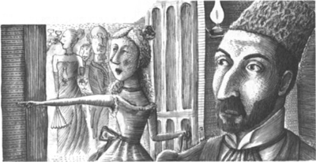

2

Tiệc tại Nhà hát Opera

Nhà hát Opera tại Paris là một tòa nhà đồ sộ. Có hàng trăm phòng. Nhiều hành lang và nhiều tầng hầm nằm sâu dưới sân khấu.
Một buổi tối năm 1890, giám đốc của Nhà hát Opera đã mở một bữa tiệc. Bữa tiệc được tổ chức trong một căn phòng rộng lớn phía sau sân khấu của Nhà hát Opera.
Có hàng trăm người làm việc tại Nhà hát Opera. Một số là ca sĩ và một số là vũ công. Vài người chơi nhạc cụ cho dàn nhạc. Vài người quản lý trang phục. Vài người điều khiển đèn chiếu sáng. Vài người điều khiển cảnh trên sân khấu. Vài người bán vé buổi biểu diễn.
Tất cả mọi người này đều đến tham dự bữa tiệc do giám đốc tổ chức. Các vũ công và ca sĩ đều rất vui. Họ tập trung lại nói chuyện với nhau ở một góc phòng. Nhưng họ không nói về buổi tiệc. Họ nói về một hồn ma tại Nhà hát Opera.
Một số ca sĩ và vũ công đã nhìn thấy một người đàn ông xa lạ trong Nhà hát Opera . Người đàn ông này luôn mặc một chiếc áo choàng màu đen. Và lúc nào anh ta cũng đeo một chiếc mặt nạ che kín mặt. Người đàn ông này không bao giờ nói với ai. Những ca sĩ và vũ công này gọi anh ta là "Bóng Ma Nhà hát Opera".
Một cô vũ công trẻ hỏi một anh ca sĩ, "Anh có nhìn thấy anh ấy chưa?"
Ca sĩ trả lời "Có. Tuần trước tôi thấy anh ta."
Cô vũ công nói "Kể cho tôi nghe về anh ta đi."
Nữ ca sĩ xinh đẹp nói "Anh ấy cao và gầy. Anh ấy mặc choàng đen."
Cô vũ công hỏi "Anh ấy đẹp hay xấu trai?"
Nữ ca sĩ trả lời, "Tôi không biết. Anh ấy đeo mặt nạ trắng che mặt. Có hai lỗ ở mặt nạ nhưng tôi không thấy mắt của anh ấy."
Cô vũ công hỏi "Chị có sợ không?"
Người ca sĩ trả lời một cách hào hứng "Có. Tôi sợ lắm!". Đôi mắt cô ấy rực sáng. Cô ấy đang rất phấn khích.
Bạn cô ấy hỏi "Nhiều người nhìn thấy hồn ma không?"
Người ca sĩ trả lời "Bà Richard biết anh ta."
"Bà Richard đã kể cho tôi nghe về anh ta. Bà ấy nói là "Mỗi đêm Bóng Ma sẽ ngồi ở Căn phòng số 5. Anh ta xem kịch. Tôi đưa chương trình cho anh ấy và anh ta đưa tiền trả cho tôi - Anh ta đưa cho tôi 20 đồng Franc." Bà ấy không hề sợ một chút nào!"
Vào lúc đó bà Richard bước vào phòng. Bà Richard bán vé. Mỗi tối, bà ấy bán vé cho các buổi biểu diễn ở Nhà hát Opera. Bà bán chương trình cho khán giả xem. Bà Richard là một phụ nữ to lớn có giọng nói rất lớn. Tất cả ca sĩ và vũ công đều sợ bà ấy.
Bà Richard hỏi "Mọi người lại bàn tán về ma à?"
Cô diễn viên trả lời, "Vâng, vâng! Xin bà hãy kể chúng tôi nghe về con ma. Nghe nói là anh ta luôn ở Căn phòng số 5 đúng không?"
Bà Richard nói, "Tôi không bán bất kỳ vé nào cho căn phòng số 5". Nhưng có người đã ngồi tại căn phòng số 5. Người đó không vào bằng cửa. Không ai có thể nhìn thấy anh ta. Anh ấy là ma - là bóng ma!"
Cô vũ công hỏi "Bà có bán chương trình cho anh ấy không?"
Bà Richard nói, "Có, anh ta luôn thích được xem chương trình. Mỗi đêm tôi đều để một tờ chương trình lên một chiếc ghế ở căn phòng số 5. Vào mỗi đêm chương trình đó biến mất. Và sau mỗi đêm biểu diễn, luôn có 20 đồng franc ở trên ghế ấy."
Một anh ca sĩ khác hỏi "Ôi, Bóng Ma Nhà hát Opera có tiền sao. Anh ta là hồn ma lắm tiền à?"
Bà Richard trả lời, "Đúng, đúng. Anh ta rất giàu." Bóng Ma là một quý ông. Anh ta mặc trang phục rất đẹp.
"Nhưng mà bà không nhìn thấy anh ấy cơ mà! Làm sao mà bà biết được trang phục của anh ta?" Anh ca sĩ nói.
Bỗng nhiên có tiếng gõ cửa phòng. Cô vũ công ra mở. Một người đàn ông cao lớn đứng ở hành lang. Anh ấy mặc trang phục đen rất đẹp. Người vũ công hét lên.
Cô ấy hét lên "Bóng Ma! Bóng Ma ở đây này!"
Các bạn của cô cười to. Một người trong đó nói, "Không phải đâu". "Là người Ba Tư chứ."
Người đàn ông cao, gầy nhìn chằm chằm vào cô gái. Người đàn ông hỏi giọng nhẹ nhàng "Cô Carlotta đâu? Cô ấy ở đây không?"
Cô gái chỉ tay vào cuối hành lang. Cô ấy chỉ về phía một cái cửa khác. Cô ấy nói, "Cô Carlotta đang ốm ở phòng thay đồ." Cô Carlotta rất mệt. Cô ấy sẽ không tới dự bữa tiệc.

Người đàn ông gầy trả lời, "Cám ơn cô."
Cô gái nhanh chóng đóng lại cánh cửa. Cô ấy hỏi những người bạn của mình "Đó là người đàn ông nào vậy?"
Anh ca sĩ trả lời "Anh ta là người Ba Tư." Anh ấy là bạn của Bóng Ma!
Mọi người đều cười lớn.
Mục lục
- Tiêu đề
- Nội dung
- Lưu ý về tác giả
- Lưu ý về câu chuyện này
- Nhân vật trong câu chuyện
- 1 Thiên thần âm nhạc
- 2 Bữa tiệc tại Nhà hát Opera
- 3 Raoul đến Nhà hát Opera
- 4 Phòng số 5
- 5 Gương trong phòng hóa trang
- 6 Vũ hội hóa trang
- 7 Câu chuyện của người Ba Tư
- 8 Christine biến mất!
- 9 Bên dưới Nhà hát Opera
- 10 Hồ nước và cây đại thụ
- 11 Bóng ma Nhà hát Opera
- Bản quyền